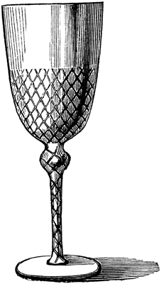

Daguet, Jeanne. Cocina de la capilla. Bogotá: s.n., 1952.
De los Ríos, Estrella, et al. Así sabe Colombia: una obra para degustar. Bogotá: El Tiempo, 2008.
Dikanka, María. De viandas, sancochos y amasijos. Bogotá: Quebecor World, 2003.
Fonnegra de Silva, Sophie. Mis mejores recetas. Bogotá: Editorial Kelly, 1959.
Gastronomía de Boyacá. s.l., s.n., s.f.
Langebaek Rueda, Carl Henrik. “Dieta y desarrollo prehispánico en Colombia: durante diez mil años el indígena presentó resistencia a la agricultura”. Credencial Historia No 60 (1994): 4-7.

Martínez, Aída. “Gastronomía y devoción: fiestas y platos favoritos de los colombianos en el siglo xix”. Credencial Historia No 12 (1990): 8-10.
________. “La mesa republicana: cambios e influencias en la alimentación de los colombianos del siglo xix”. Credencial Historia No 60 (1994): 8-11.
________. Mesa y cocina en el siglo xix: Colombia. Bogotá: Planeta, 1990.
Moreno Blanco, Lácydes. “Aportes regionales a la cocina criolla: supervivencia de los elementos autóctonos frente a los cambios de la vida moderna”. Credencial Historia No 60 (1994): 14-15.
Muñoz Delgado, Juan Jacobo. Platos de las abuelas: cocina tradicional de Popayán. Yerbabuena: Imprenta Patriótica del Instituto Caro y Cuervo, 1990.
Neyra Restrepo, María Lía, ed. Colombia: cocina de regiones. s.l: MNR Ediciones, 2012.
Ospina de Navarro, Sofía. La buena mesa. Medellín: Promotora San Antonio, s.f.
Ordóñez Caicedo, Carlos. Gran libro de la cocina colombiana. Bogotá: Instituto Colombiano de Cultura, Círculo de Lectores, 1984.
Restrepo Manrique, Cecilia. “Alimentación y culinaria durante la Independencia”. Credencial Historia No 250 (2010): 6-9.
Restrepo Manrique, Cecilia y Saavedra, Helena. De la sala al comedor: anécdotas y recetas bogotanas. Bogotá: Binah Editores, 2004.
Rojas de Perdomo, Lucía. Cocina prehispánica. Bogotá: Editorial Voluntad, 1994.
Segura, Luis Carlos. El sabor de la tradición: almojábanas y garullas de Soacha. Bogotá: Academia Verde Oliva, s.f.